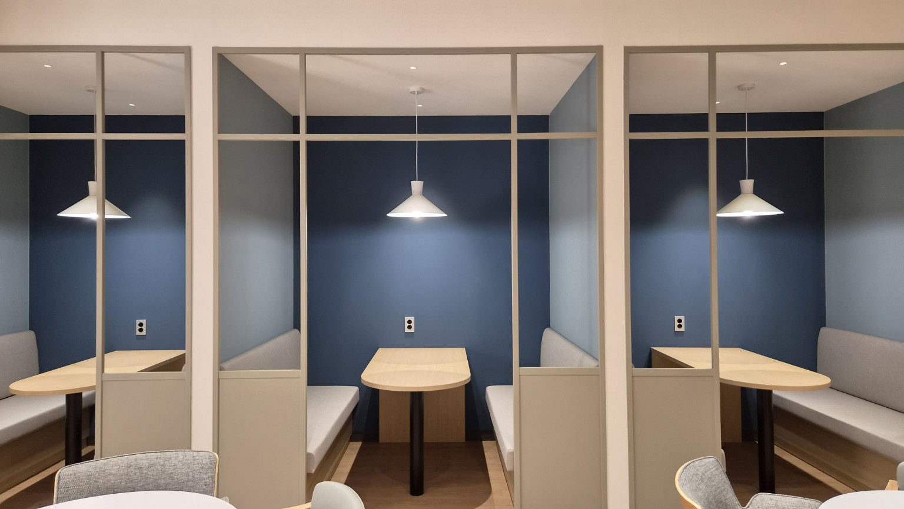

카드의 내부와 외부 공간
content, padding, border, margin이 요소의 실제 크기와 간격을 결정합니다.
LAYOUT LAB
사진 위의 버튼을 누르면 각 개념이 현재 웹페이지의 어느 요소에 적용됐는지 확인할 수 있습니다.

content, padding, border, margin이 요소의 실제 크기와 간격을 결정합니다.
메뉴와 이동 버튼처럼 한 방향 흐름을 중심으로 정렬합니다.
여러 카드의 열 수와 간격을 관리하고 모바일에서는 한 열로 전환합니다.
같은 HTML을 유지하면서 화면 너비에 따라 메뉴와 카드 배치를 변경합니다.